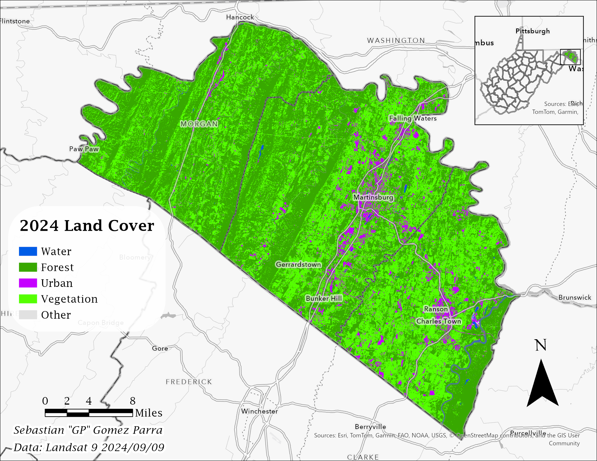
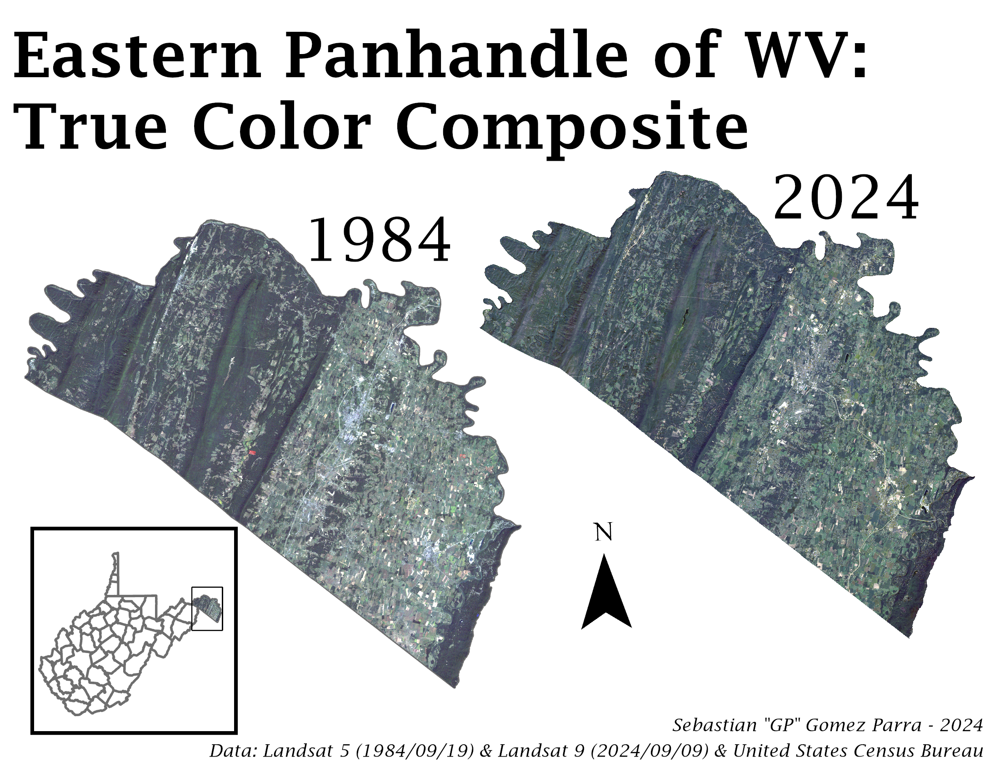
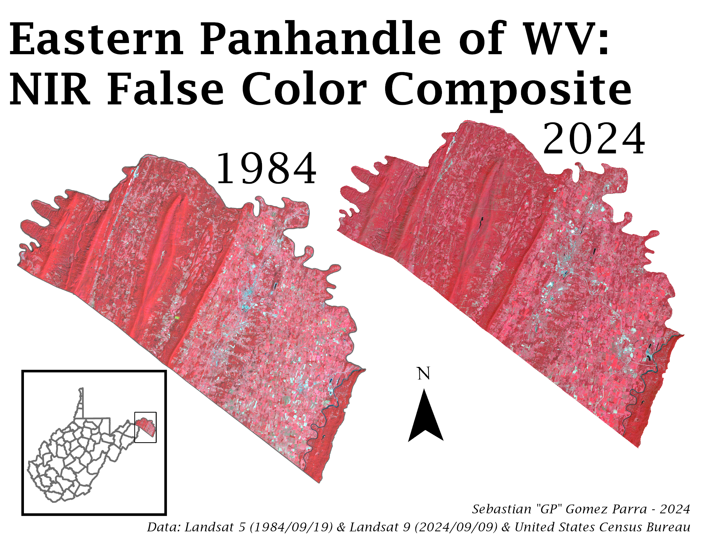
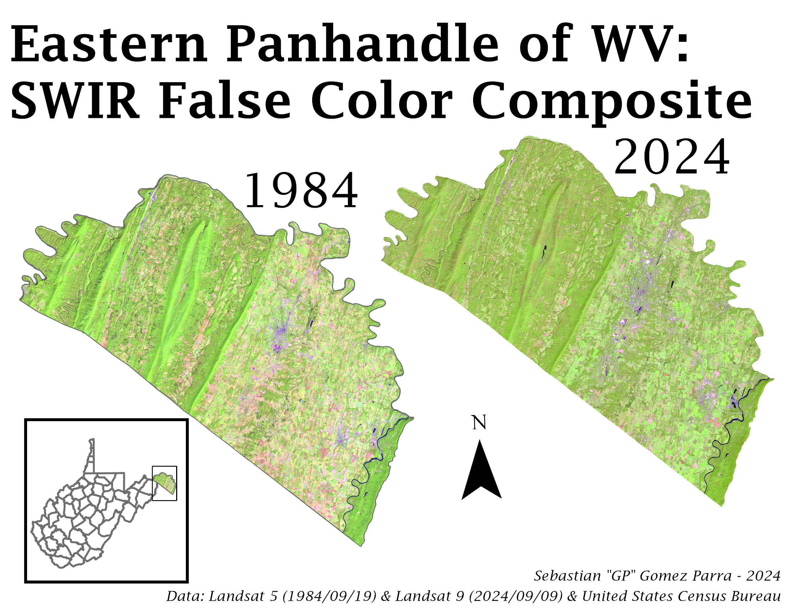
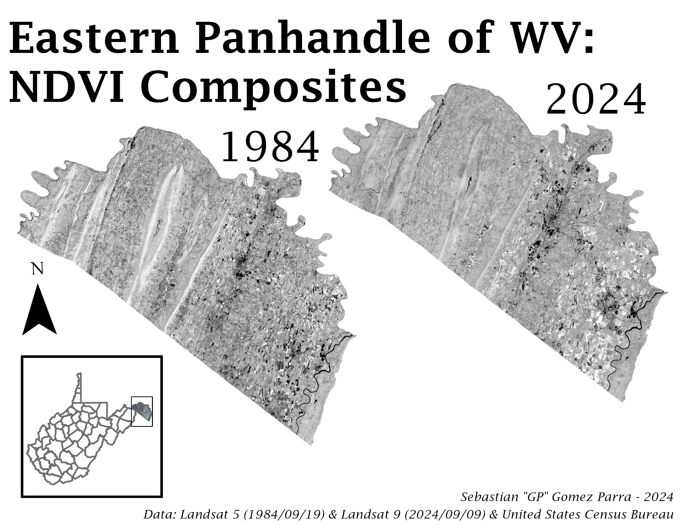
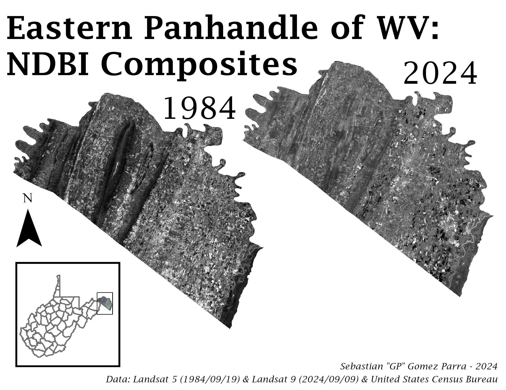
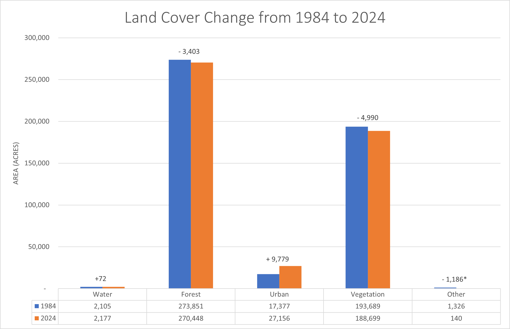

Land Cover Change from 1984 to 2024 in the Eastern Panhandle of West Virginia
“Suburbia is where the developer bulldozes out the trees, then names the streets after them.” - Bill Vaughan
Project Overview
What is the problem?
The Eastern Panhandle of West Virginia — made up of Berkeley, Jefferson, and Morgan counties — is the fastest growing region in the state, driven by its proximity to the Washington D.C. metro and its natural attractions. Understanding how this rapid growth has changed the land cover over the past 40 years is the core challenge this project addresses.
Why does it need to be solved?
Understanding land cover change across the multiple jurisdictions of the study area is difficult using traditional zoning and planning records alone, as each entity defines its zoning categories differently. Remote sensing offers a cost-effective alternative that allows for a regional understanding of how the region has changed over time. These findings can directly inform environmental management and urban planning decisions for the Eastern Panhandle as a whole.
Tools & Data
ArcGIS Pro Tools
- Raster Calculator
- Composite Raster Bands
- Mosaic Rasters
- Raster reclassification & normalization
- Supervised Classification (SVM Algorithm)
- Unsupervised Classification (ISODATA Algorithm)
- Clip
Data Sources
- Landsat 5 imagery, September 19, 1984 (USGS Earth Explorer)
- Landsat 9 imagery, September 9, 2024 (USGS Earth Explorer)
- County boundaries (U.S. Census TIGER/Line Shapefiles)
Methodology

Once the images were prepared, multiple composite images were created using different band combinations — true color, NIR false color, and SWIR false color — to highlight different characteristics of the land surface. NDVI and NDBI ratio images were also created for both years. NDVI highlights differences in vegetation health, while NDBI highlights built-up urban areas, with both indices normalizing values between -1 and +1.
A hybrid-supervised classification method was used, combining both supervised and unsupervised classification to produce the most accurate result. For the supervised component, training data was drawn over a SWIR composite with a minimum of 30 samples per class across 6 land cover types: water, forest, urban, vegetation, farm, and other. The Support Vector Machine (SVM) algorithm was selected over the more common Maximum Likelihood Classification due to its demonstrated accuracy advantages in other land cover classification studies. An NDVI image was included in the classification process to improve the distinction between land cover types.
For the unsupervised component, an ISODATA clustering algorithm was applied to the same data, generating 35 spectral clusters. These clusters were then manually grouped into the same 6 land cover types using NDBI values and band similarities as reference. The two classifications were then combined, with areas where they differed being reclassified through visual inspection using the composite images already created.




Validation
Final classifications for both dates were validated using a confusion matrix comparing classified pixels against reference points. The initial results fell below 80% accuracy, resulting in a closer examination of where the classification was failing. Analysis of the confusion matrix revealed that vegetation and farmland were frequently confused with each other — a common challenge in agricultural regions where the spectral signatures of crops and natural vegetation are very similar.
Improving the accuracy was done through combining the vegetation and farmland classes into a single class, reducing the classifications from 6 land cover types to 5. The classifications were then re-run and re-validated. The revised 1984 classification received an overall accuracy of 88.03%, and the revised 2024 classification received an overall accuracy of 88.46% — both indicating strong agreement between the classification and reference data.
It is important to note that both classifications were validated using reference points drawn from the 2024 image; there is no historical aerial or satellite imagery of sufficient resolution available for 1984. This means the 1984 validation should be interpreted with some caution, as land cover conditions in 1984 may differ from what the 2024 reference data assumes.
1984 Confusion Matrices
Original 1984 Confusion Matrix (Overall Accuracy: 72%)
| Reference → / Classified ↓ | Water | Forest | Urban | Farm | Vegetation | Other | Total | U_Accuracy |
|---|---|---|---|---|---|---|---|---|
| Water | 10 | 0 | 0 | 0 | 0 | 0 | 10 | 100% |
| Forest | 1 | 255 | 3 | 11 | 10 | 0 | 280 | 91% |
| Urban | 1 | 0 | 12 | 3 | 1 | 1 | 18 | 67% |
| Farm | 0 | 14 | 2 | 43 | 23 | 1 | 83 | 52% |
| Vegetation | 0 | 2 | 8 | 56 | 48 | 1 | 115 | 42% |
| Other | 0 | 0 | 7 | 0 | 0 | 3 | 10 | 30% |
| Total | 12 | 271 | 32 | 113 | 82 | 6 | 516 | |
| P_Accuracy | 83% | 94% | 38% | 38% | 59% | 50% | Overall: 72% | |
Final 1984 Confusion Matrix (Overall Accuracy: 87%)
| Reference → / Classified ↓ | Water | Forest | Urban | Vegetation | Other | Total | U_Accuracy |
|---|---|---|---|---|---|---|---|
| Water | 10 | 0 | 0 | 0 | 0 | 10 | 100% |
| Forest | 1 | 255 | 3 | 21 | 0 | 280 | 91% |
| Urban | 1 | 0 | 12 | 4 | 1 | 18 | 67% |
| Vegetation | 0 | 16 | 10 | 170 | 2 | 198 | 86% |
| Other | 0 | 0 | 7 | 0 | 3 | 10 | 30% |
| Total | 12 | 271 | 32 | 195 | 6 | 516 | |
| P_Accuracy | 83% | 94% | 38% | 87% | 50% | Overall: 87% | |
2024 Confusion Matrices
Original 2024 Confusion Matrix (Overall Accuracy: 69%)
| Reference → / Classified ↓ | Water | Forest | Urban | Farm | Vegetation | Other | Total | U_Accuracy |
|---|---|---|---|---|---|---|---|---|
| Water | 10 | 0 | 0 | 0 | 0 | 0 | 10 | 100% |
| Forest | 2 | 225 | 5 | 11 | 34 | 0 | 277 | 81% |
| Urban | 0 | 0 | 22 | 4 | 1 | 1 | 28 | 79% |
| Farm | 0 | 5 | 4 | 48 | 19 | 1 | 77 | 62% |
| Vegetation | 0 | 23 | 11 | 34 | 48 | 0 | 116 | 41% |
| Other | 4 | 0 | 0 | 0 | 0 | 6 | 10 | 60% |
| Total | 16 | 253 | 42 | 97 | 102 | 8 | 518 | |
| P_Accuracy | 63% | 89% | 52% | 49% | 47% | 75% | Overall: 69% | |
Final 2024 Confusion Matrix (Overall Accuracy: 80%)
| Reference → / Classified ↓ | Water | Forest | Urban | Vegetation | Other | Total | U_Accuracy |
|---|---|---|---|---|---|---|---|
| Water | 10 | 0 | 0 | 0 | 0 | 10 | 100% |
| Forest | 2 | 225 | 5 | 45 | 0 | 277 | 81% |
| Urban | 0 | 0 | 22 | 5 | 1 | 28 | 79% |
| Vegetation | 0 | 28 | 15 | 149 | 1 | 193 | 77% |
| Other | 4 | 0 | 0 | 0 | 6 | 10 | 60% |
| Total | 16 | 253 | 42 | 199 | 8 | 518 | |
| P_Accuracy | 63% | 89% | 52% | 75% | 75% | Overall: 80% | |
Results
The land cover classification maps for 1984 and 2024, along with the land cover change chart below, show a clear pattern of urbanization across the Eastern Panhandle over the 40-year study period. While forest and vegetation remain the dominant land cover types in both years, the changes between them tell a significant story.
Urban land cover saw the most dramatic change, growing from 17,377 acres (4%) in 1984 to 27,156 acres (6%) in 2024 — a gain of 9,779 acres representing nearly a 56% increase in urban land cover over 40 years. This near doubling of developed land is consistent with the Eastern Panhandle's status as the fastest growing region in West Virginia.
Forest cover declined by 3,403 acres and vegetation by 4,990 acres over the same period, each losing approximately 1 percentage point of total area coverage. Water and other land cover types remained effectively stable, each showing less than 1% change in total area.

*The significant decline in the "Other" category between 1984 and 2024 is partially attributable to an image artifact in the 1984 imagery rather than actual land cover change.
Limitations and Conclusions
Limitations
One of the biggest problems in using a raster-based approach for land cover classification has to do with the amount of information carried by that one pixel. The analysis was done using a 30 m by 30 m resolution, meaning that a variety of different land cover types could possibly be covered in this area. This is especially true in possible misclassification that can occur in farm areas that have trees bordering their properties or in urban areas that have tree-lined streets. The misclassification could also cause salt and pepper effects in these areas that have more than one land cover type within the 30 m by 30 m area.
The best way to resolve these problems would be to use an image resolution that would represent a smaller area on the ground. While the solution is there, the sharper resolution isn't always available, especially when looking at older images, so these problems need to be understood, and results should be interpreted with some caution.
An additional limitation specific to the 1984 classification is a visible error on the image that is assumed to be an artifact of this older image. This artifact affected the classification in that area, likely contributing to the inflated "Other" category in the 1984 results, which showed 1,326 acres compared to just 140 acres in 2024. This discrepancy should be interpreted as a data artifact rather than a genuine land cover change, and a future study should address this by being more diligent in image selection, ensuring no artifacts are on the images.
Conclusions
The growth seen in the Eastern Panhandle can plausibly be linked to the loss of vegetation and forest land cover, as the amount of area lost in those two types roughly equals the amount gained by urban land cover.
Future studies trying to pinpoint land cover changes more directly could be done by reducing the number of land cover types to only 3, rather than the 5 used in this study. The use of only 3 land cover types could help better identify where these changes were actually occurring on the ground.
One methodological improvement for future studies would be running a confusion matrix after each classification — supervised and unsupervised — were originally run, rather than waiting until they were combined. Running confusion matrices at each stage would ensure that the SVM supervised classification and ISODATA unsupervised classification were each performing above 80% accuracy independently. It would also confirm that the training data for the supervised classification was adequate and whether the correct number of clusters were created for the unsupervised classification. Finally, it would help reveal the actual impact of combining the two classifications together, rather than assuming the combination would result in better overall accuracy.